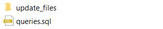
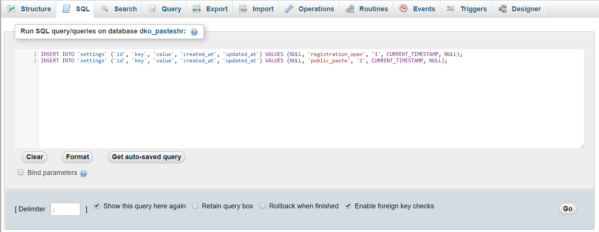

Created: 12/19/2019
By: EcoDevs
Email: ecodevs@gmail.com
Thank you for purchasing my script. If you have any questions that are beyond the scope of this help file, please feel free to email via my user page contact form here. Thanks so much!
Note - If you are installing PasteShr for the first time then you do not need to do these updates, update only if you're using old version of PasteShr.1 - Copy all queries from V*.*/queries.sql file. (Skip this step if there is no queries.sql file in update folder)
2 - Open phpmyadmin and select your database
3 - Click on SQL tab and paste all queries
4 - Click on Go button
1 - Copy all files from V*.*/update_files folder.
2 - Paste & Overwrite all those files on pasteshr directory respectively.
1 - Click on Clear Cache button from admin panel settings.
Or
Delete all cached view files from /storage/framework/views/*.blade.php
Once again, thank you so much for purchasing this script. As I said at the beginning, I'd be glad to help you if you have any questions relating to this script. No guarantees, but I'll do my best to assist. If you have a more general question relating to the script, you can email us at ecodevs@gmail.com
EcoDevs